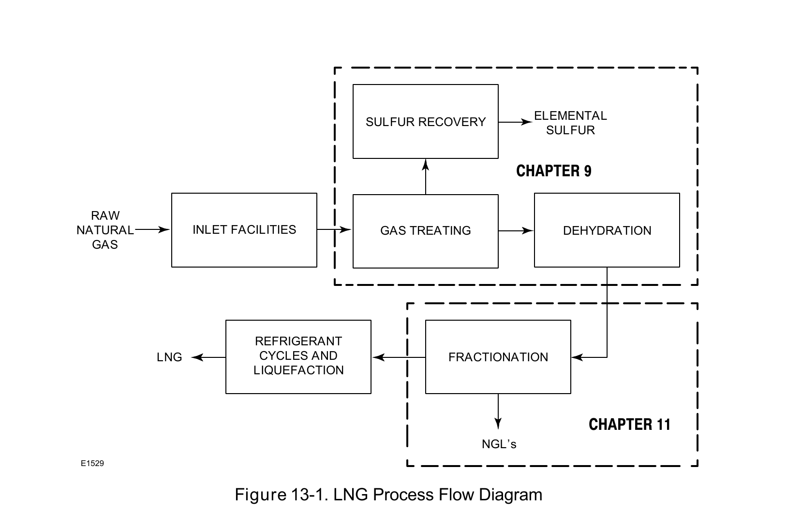

Cryogenic Constraint Application

LNG liquefaction cools natural gas through a refrigerant cycle to −161°C (−258°F) — well past the frost-point severe-service threshold CVE2's example used — the same material-selection judgment applies, at a materially colder real number.
Fisher Control Valve Sourcebook — Oil & Gas (© 2013 Fisher), Chapter 13 "LNG Liquefaction," Figure 13-1 (drawing number E1529, printed p. 13-2) — "Figure 13-1. LNG Process Flow Diagram." — used directly. Component Index: ogas-cmp-lng-process-flow-diagram.